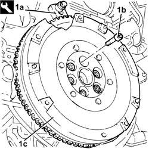
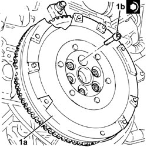

1024B22 ENGINE FLYWHEEL - R.R WITH CLUTCH REMOVED FOR VERSIONS WITH MANUAL GEARBOX
- Path
- Procedures > 10 ENGINE > 1024 CRANKSHAFT AND FLYWHEEL > 1024B FLYWHEEL > 1024B22 ENGINE FLYWHEEL - R.R WITH CLUTCH REMOVED FOR VERSIONS WITH MANUAL GEARBOX
- Kind
- repair procedure (removal / refitting; the operation number is the code)
- Applies to
- engines: 2.2 JTS, 3.2 JTS; all production periods
- Interactive page
- https://sloeber94.github.io/elrnDB-aBrrSpdr/en/#/946001846
Applies to: engines: 3.2 JTS; all production periods
Applies to: engines: 2.2 JTS; all production periods
 Removing
Removing
 Refitting
Refitting1. With the flywheel lock (1a) fitted, undo the bolts (1b) and remove the flywheel (1c).
Tool | Description | Function | Validity |
|---|---|---|---|
1860846000 | Counter-torque | Flywheel lock |

Applies to: engines: 2.2 JTS; all production periods
Refitting
Removing1. Place the flywheel (1a) in its housing and secure it tightening the new bolts (1b) to the recommended torque.
Component | Fastening | dia | Value (daNm) | Validity |
|---|---|---|---|---|
Engine flywheel | Bolt (pretreated to be replaced) | M10 | (crankshaft side) 4.8 - 5.8 + 25° | 1.9 JTS 2.2 JTS |

Topics linked from this page (2)
- 1004B10 POWER UNIT WITH MANUAL GEARBOX - R.R
- 1004D10 POWER UNIT (MANUAL GEARBOX), REMOVED, DISMANTLE AND REASSEMBLE